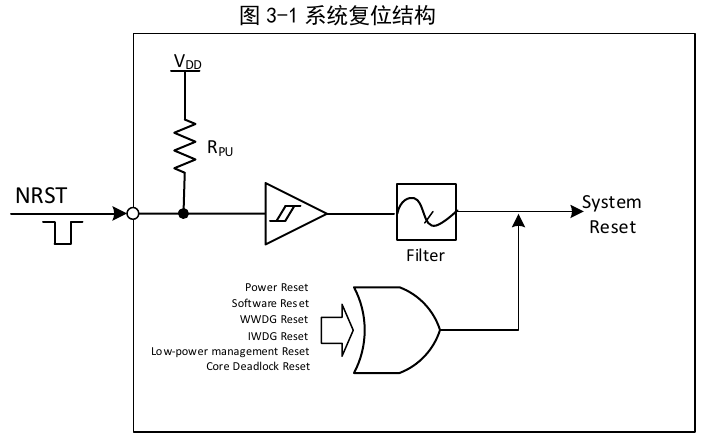
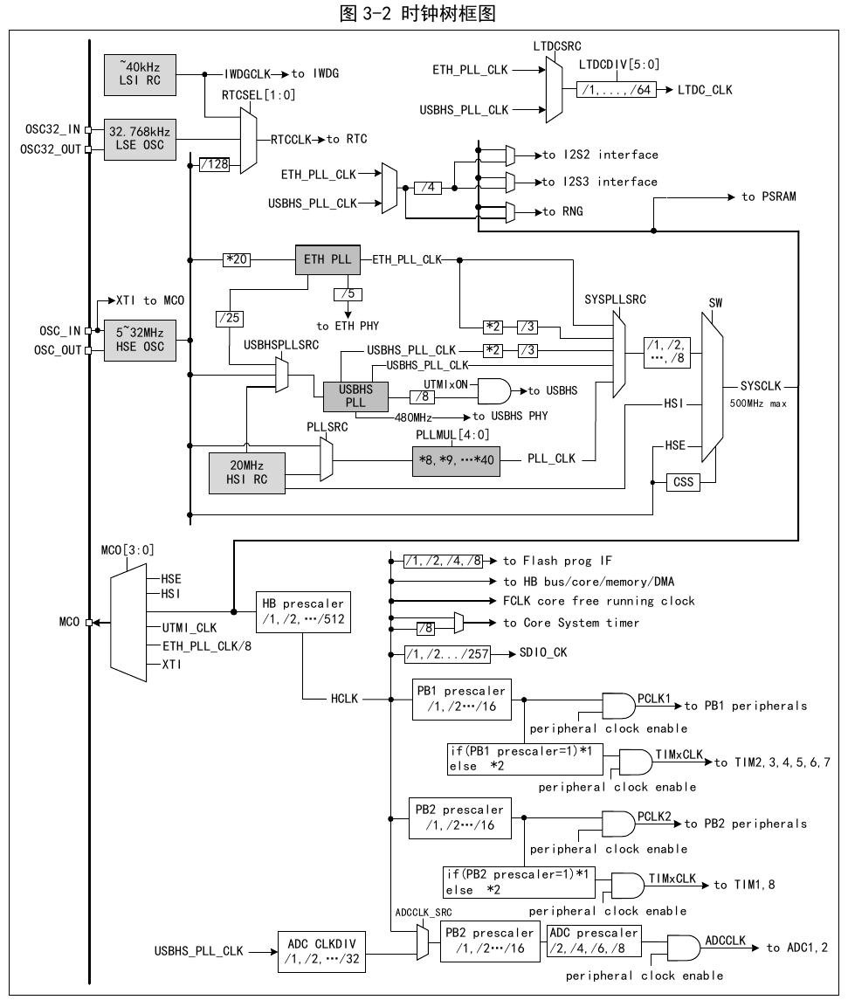
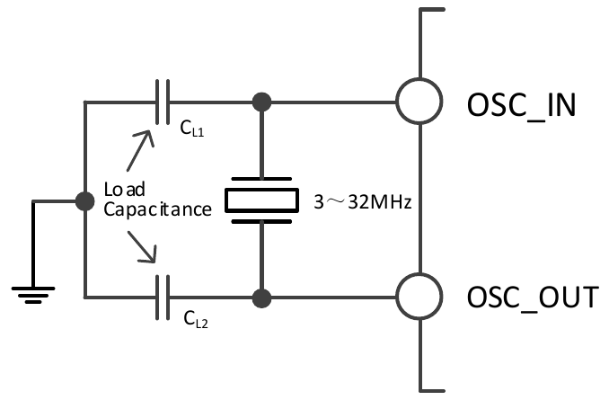
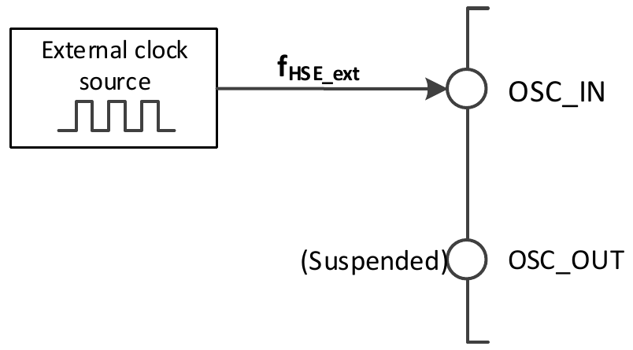
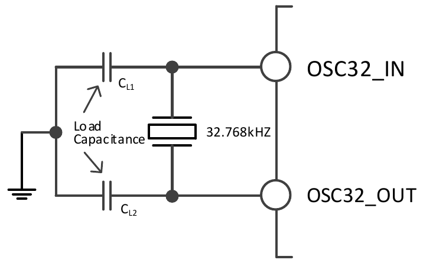
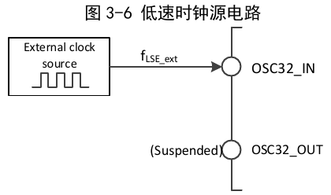

The controller provides different reset forms and a configurable clock tree structure based on the division of power domains and peripheral power consumption management considerations in applications. This chapter describes the scope of each clock in the system.
The controller provides 3 reset forms: power reset, system reset, and backup domain reset.
When a power reset occurs, all registers except those in the backup domain are reset (the backup domain is powered by VBAT). Its trigger conditions include:
When a system reset occurs, all registers except the reset flags in the control/status register RCC_RSTSCKR and the backup domain are reset. The reset event source can be identified by checking the reset status flag bits in the RCC_RSTSCKR register. Its trigger conditions include:
Window/independent watchdog reset: triggered by the overflow of the window/independent watchdog peripheral timer count period. For detailed description, refer to the corresponding chapters.
Software reset: The chip resets the system by setting the SYSRST bit in the interrupt configuration register PFIC_CFGR of the programmable interrupt controller PFIC, or by setting the SYSRST bit in the configuration register PFIC_SCTLR. For details, refer to the corresponding chapter.
Low-power management reset: By setting the STANDYRST bit in the user option bytes to 0, standby mode reset is enabled. In this case, after executing the procedure to enter standby mode, a system reset will be executed instead of entering standby mode. By setting the STOPRST bit in the user option bytes to 0, stop mode reset is enabled. In this case, after executing the procedure to enter stop mode, a system reset will be executed instead of entering stop mode.
Core deadlock reset: When the LKUPEN bit of the EXTEN_CTR register is enabled, if the core runs abnormally and cannot recover, resulting in a deadlock, the system will perform a reset.

When a backup domain reset occurs, only the backup domain registers are reset, including the backup registers and the RCC_BDCTLR register (RTC enable and LSE oscillator). Its trigger conditions include:

HSI is a high-speed clock signal generated by the internal 20MHz RC oscillator of the system. The HSI RC oscillator can provide a system clock without requiring any external components. Its startup time is very short, but the clock frequency accuracy is relatively poor. HSI is enabled and disabled by setting the HSION bit in the RCC_CTLR register. The HSIRDY bit indicates whether the HSI RC oscillator is stable. The system defaults to HSION and HSIRDY set to 1 (it is recommended not to disable it). If the HSIRDYIE bit of the RCC_INTR register is set, a corresponding interrupt will be generated.
HSE is an external high-speed clock signal, generated by an external crystal/ceramic resonator or fed in from an external high-speed clock source.


LSI is a low-speed clock signal generated by the internal approximately 40kHz RC oscillator of the system. It can keep running in stop and standby modes, providing a clock reference for the RTC clock, independent watchdog, and wakeup unit. For further information, refer to the electrical characteristics section of the datasheet. LSI can be enabled and disabled by setting the LSION bit in the RCC_RSTSCKR register, and then the LSIRDY bit can be queried to detect whether the LSI RC oscillator is stable. The hardware only feeds the clock in after the LSIRDY bit is set to 1. If the LSIRDYIE bit of the RCC_INTR register is set, a corresponding interrupt will be generated.
LSE is an external low-speed clock signal, generated by an external crystal/ceramic resonator or fed in from an external low-speed clock source. It provides a low-power and precise clock source for the RTC clock or other timing functions.


By configuring the RCC_CFGR0 register and RCC_CFGR2 register, the system PLL clock can select 5 clock sources and division ratios. These settings must be completed before each PLL is enabled. Once the PLL is started, these parameters cannot be changed.
The PLL is enabled and disabled by setting the PLLON bit in the RCC_CTLR register. The PLLRDY bit indicates whether the PLL clock is stable. The hardware only feeds the clock into the system after the PLLRDY bit is set to 1.
The ETH_PLL is enabled and disabled by setting the ETH_PLLON bit in the RCC_CTLR register. The ETH_PLLRDY bit indicates whether the ETH_PLL clock is stable. The hardware only feeds the clock into the system after the ETH_PLLRDY bit is set to 1.
The USBHS_PLL is enabled and disabled by setting the USBHS_PLLON bit in the RCC_CTLR register. The USBHS_PLLRDY bit indicates whether the USBHS_PLL clock is stable. The hardware only feeds the clock into the system after the USBHS_PLLRDY bit is set to 1.
SYSPLL clock sources:
The system clock source is configured through the SW[1:0] bits of the RCC_CFGR0 register. The SWS[1:0] bits indicate the current system clock source.
After controller reset, the HSI clock is selected as the system clock source by default. Switching between clock sources only occurs after the target clock source is ready.
HB is the High Performance Bus, and its bus peripheral clock is HCLK; PB1 is Peripheral Bus 1, and its bus peripheral clock is PCLK1; PB2 is Peripheral Bus 2, and its bus peripheral clock is PCLK2.
By configuring the HPRE[3:0], PPRE1[2:0], and PPRE2[2:0] bits of the RCC_CFGR0 register, the clocks of the HB, PB1, and PB2 buses can be configured respectively. These bus clocks determine the access clock reference for the peripheral interfaces mounted under them. The application can adjust different values to reduce the power consumption of some peripherals during operation.
Through the individual bits in the RCC_HBRSTR, RCC_PB1PRSTR, and RCC_PB2PRSTR registers, different peripheral modules can be reset to their initial states.
Through the individual bits in the RCC_HBPCENR, RCC_PB1PCENR, and RCC_PB2PCENR registers, the communication clock interfaces of different peripheral modules can be individually enabled or disabled. When using a peripheral, its clock enable bit must first be set before its registers can be accessed.
By setting the RTCSEL[1:0] bits of the RCC_BDCTLR register, the RTCCLK clock source can be provided by HSE/128, LSE, or LSI clock. Before modifying this bit, ensure that the DBP bit in the power control register (PWR_CTLR) is set to 1. Only a backup domain reset can reset this bit.
If the independent watchdog has been configured by hardware or started by software, the LSI oscillator will be forcibly turned on and cannot be turned off. After the LSI oscillator stabilizes, the clock is supplied to the IWDG.
The microcontroller allows outputting a clock signal to the MCO pin. By configuring the corresponding GPIO port register for alternate function push-pull output mode, and through configuring the MCO[3:0] bits of the RCC_CFGR0 register, the following 6 clock signals can be selected as the MCO clock output:
The clock security system is an operational protection mechanism of the controller. It can switch to the HSI clock in the event of an HSE clock failure and generate an interrupt notification, allowing the application software to perform rescue operations.
By setting the CSSON bit of the RCC_CTLR register to 1, the clock security system is activated. At this point, the clock monitor will be enabled after the HSE oscillator starts (HSERDY=1) with a delay, and will be disabled after the HSE clock is turned off. Once the HSE clock fails during system operation, the HSE oscillator will be turned off, the clock failure event will be sent to the brake input of the advanced timer (TIM1), and a clock security interrupt will be generated with the CSSF bit set to 1. The application then enters the NMI non-maskable interrupt. By setting the CSSC bit to 1, the CSSF flag can be cleared and the NMI interrupt pending bit can be withdrawn.
If the HSE is currently the system clock, or the HSE is currently the PLL input clock and the PLL is the system clock, the clock security system will automatically switch the system clock to the HSI oscillator when an HSE fault occurs, and turn off the HSE oscillator and PLL.
| Name | Address | Description | Reset Value |
|---|---|---|---|
| R32_RCC_CTLR | 0x40021000 | Clock control register | 0x0000xx83 |
| R32_RCC_CFGR0 | 0x40021004 | Clock configuration register 0 | 0x20000000 |
| R32_RCC_INTR | 0x40021008 | Clock interrupt register | 0x00000000 |
| R32_RCC_PB2PRSTR | 0x4002100C | PB2 peripheral reset register | 0x00000000 |
| R32_RCC_PB1PRSTR | 0x40021010 | PB1 peripheral reset register | 0x00000000 |
| R32_RCC_HBPCENR | 0x40021014 | HB peripheral clock enable register | 0x00000004 |
| R32_RCC_PB2PCENR | 0x40021018 | PB2 peripheral clock enable register | 0x00000000 |
| R32_RCC_PB1PCENR | 0x4002101C | PB1 peripheral clock enable register | 0x00000000 |
| R32_RCC_BDCTLR | 0x40021020 | Backup domain control register | 0x00000000 |
| R32_RCC_RSTSCKR | 0x40021024 | Control/status register | 0x0C000000 |
| R32_RCC_HBRSTR | 0x40021028 | HB peripheral reset register | 0x00000000 |
| R32_RCC_CFGR2 | 0x4002102C | Clock configuration register 2 | 0x00000000 |
| R32_RCC_CFGR3 | 0x40021030 | Clock configuration register 3 | 0x00000000 |
Offset address: 0x00
| 31 | 30 | 29 | 28 | 27 | 26 | 25 | 24 | 23 | 22 | 21 | 20 | 19 | 18 | 17 | 16 |
| Reserved | PLLRDY | PLLON | ETH_PLLRDY | ETH_PLLON | USBHS_PLLRDY | USBHS_PLLON | CSSON | HSEBYP | HSERDY | HSEON | |||||
| 15 | 14 | 13 | 12 | 11 | 10 | 9 | 8 | 7 | 6 | 5 | 4 | 3 | 2 | 1 | 0 |
| HSICAL[7:0] | HSITRIM[4:0] | Reserved | HSIRDY | HSION | |||||||||||
| Bits | Name | Access | Description | Reset |
|---|---|---|---|---|
| [31:26] | Reserved | RO | Reserved. | 0 |
| 25 | PLLRDY | RO | PLL clock ready locked flag: 1: PLL clock locked; 0: PLL clock not locked. | 0 |
| 24 | PLLON | RW | PLL clock enable control bit: 1: Enable PLL clock; 0: Disable PLL clock. Note: After entering stop or standby low-power mode, this bit is cleared to 0 by hardware. | 0 |
| 23 | ETH_PLLRDY | RO | ETH_PLL clock ready locked flag: 1: ETH_PLL clock locked; 0: ETH_PLL clock not locked. | 0 |
| 22 | ETH_PLLON | RW | ETH_PLL enable control bit: 1: Enable ETH_PLL clock; 0: Disable ETH_PLL clock. | 0 |
| 21 | USBHS_PLLRDY | RO | USBHS_PLL clock ready locked flag: 1: USBHS_PLL clock locked; 0: USBHS_PLL clock not locked. | 0 |
| 20 | USBHS_PLLON | RW | USBHS_PLL enable control bit: 1: Enable USBHS_PLL clock; 0: Disable USBHS_PLL clock. | 0 |
| 19 | CSSON | RW | Clock security system enable control bit: 1: Enable clock security system. When HSE is ready (HSERDY set to 1), hardware enables the HSE clock monitoring function. If an HSE abnormality is detected, the CSSF flag and NMI interrupt are triggered. When HSE is not ready, hardware disables the HSE clock monitoring function. 0: Disable clock security system. | 0 |
| 18 | HSEBYP | RW | External high-speed crystal bypass control bit: 1: Bypass external high-speed crystal/ceramic resonator (use external clock source); 0: Do not bypass high-speed external crystal/ceramic resonator. Note: This bit must be written while HSEON is 0. | 0 |
| 17 | HSERDY | RO | External high-speed crystal oscillator stable ready flag (set by hardware): 1: External high-speed crystal oscillator is stable; 0: External high-speed crystal oscillator is not stable. Note: After the HSEON bit is cleared to 0, this bit requires 6 HSE cycles to clear. | 0 |
| 16 | HSEON | RW | External high-speed crystal oscillator enable control bit: 1: Enable HSE oscillator; 0: Disable HSE oscillator. Note: After entering stop or standby low-power mode, this bit is cleared to 0 by hardware. | 0 |
| [15:8] | HSICAL[7:0] | RO | Internal high-speed clock calibration value, automatically initialized at system startup. | x |
| [7:3] | HSITRIM[4:0] | RW | Internal high-speed clock trim value: The user can input a trim value to add to the HSICAL[7:0] value, adjusting the internal HSI RC oscillator frequency according to voltage and temperature changes. The default value is 16, which can adjust HSI to 20MHz±0.25%; each step of HSICAL change adjusts approximately 40kHz. | 10000b |
| 2 | Reserved | RO | Reserved. | 0 |
| 1 | HSIRDY | RO | Internal high-speed clock (20MHz) stable ready flag (set by hardware): 1: Internal high-speed clock (20MHz) is stable; 0: Internal high-speed clock (20MHz) is not stable. Note: After the HSION bit is cleared to 0, this bit requires 6 HSI cycles to clear. | 1 |
| 0 | HSION | RW | Internal high-speed clock (20MHz) enable control bit: 1: Enable HSI oscillator; 0: Disable HSI oscillator. Note: When returning from standby and stop modes or when the external oscillator HSE used as the system clock fails, this bit is set to 1 by hardware to start the internal 20MHz RC oscillator. | 1 |
Offset address: 0x04
| 31 | 30 | 29 | 28 | 27 | 26 | 25 | 24 | 23 | 22 | 21 | 20 | 19 | 18 | 17 | 16 |
| Reserved | ADC_DUTY_SEL[1:0] | ADCSRC | MCO[3:0] | Reserved | PLLMUL[4:0] | PLLSRC | |||||||||
| 15 | 14 | 13 | 12 | 11 | 10 | 9 | 8 | 7 | 6 | 5 | 4 | 3 | 2 | 1 | 0 |
| ADCPRE[1:0] | PPRE2[2:0] | PPRE1[2:0] | HPRE[3:0] | SWS[1:0] | SW[1:0] | ||||||||||
| Bits | Name | Access | Description | Reset |
|---|---|---|---|---|
| 31 | Reserved | RO | Reserved. | 0 |
| [30:29] | ADC_DUTY_SEL[1:0] | RW | ADC clock duty cycle selection: 00: ADC clock duty cycle is 50%; 01: ADC clock duty cycle is 62.5%; 10: ADC clock duty cycle is 75%; 11: ADC clock duty cycle is 62.5%. | 01b |
| 28 | ADCSRC | RW | ADC input clock source selection: 1: USBHS_PLL divided clock; 0: HCLK. | 0 |
| [27:24] | MCO[3:0] | RW | Microcontroller MCO pin clock output control: 00xx: No clock output; 0100: System clock (SYSCLK) output; 0101: Internal 20MHz RC oscillator clock (HSI) output; 0110: External oscillator clock (HSE) output; 0111: UTMI clock output; 1000: ETH_PLL clock divided by 8 output; 1010: XT1 external oscillator clock output; Others: Reserved. Note: There may be a few cycles of clock loss when starting or switching the MCO clock. | 0000b |
| [23:22] | Reserved | RO | Reserved. | 0 |
| [21:17] | PLLMUL[4:0] | RW | System PLL multiplication factor: 00000: ×8; 00001: ×9; 00010: ×10; 00011: ×11; 00100: ×12; 00101: ×12.5; 00110: ×13; 00111: ×13.5; 01000: ×14; 01001: ×14.5; 01010: ×15; 01011: ×15.5; 01100: ×16; 01101: ×16.5; 01110: ×17; 01111: ×17.5; 10000: ×18; 10001: ×18.5; 10010: ×19; 10011: ×19.5; 10100: ×20; 10101: ×21; 10110: ×22; 10111: ×24; 11000: ×26; 11001: ×28; 11010: ×30; 11011: ×32; 11100: ×34; 11101: ×36; 11110: ×38; 11111: ×40. | 0 |
| 16 | PLLSRC | RW | System PLL source: 1: HSE; 0: HSI. | 0 |
| [15:14] | ADCPRE[1:0] | RW | ADC clock source prescaler control: 00: PCLK2 divided by 2 as ADC clock; 01: PCLK2 divided by 4 as ADC clock; 10: PCLK2 divided by 6 as ADC clock; 11: PCLK2 divided by 8 as ADC clock. Note: ADC clock must not exceed 30MHz. | 00b |
| [13:11] | PPRE2[2:0] | RW | PB2 clock source prescaler control: 0xx: HCLK not divided; 100: HCLK divided by 2; 101: HCLK divided by 4; 110: HCLK divided by 8; 111: HCLK divided by 16. | 000b |
| [10:8] | PPRE1[2:0] | RW | PB1 clock source prescaler control: 0xx: HCLK not divided; 100: HCLK divided by 2; 101: HCLK divided by 4; 110: HCLK divided by 8; 111: HCLK divided by 16. | 000b |
| [7:4] | HPRE[3:0] | RW | HB clock source prescaler control: 0xxx: SYSCLK not divided; 1000: SYSCLK divided by 2; 1001: SYSCLK divided by 4; 1010: SYSCLK divided by 8; 1011: SYSCLK divided by 16; 1100: SYSCLK divided by 64; 1101: SYSCLK divided by 128; 1110: SYSCLK divided by 256; 1111: SYSCLK divided by 512. | 0000b |
| [3:2] | SWS[1:0] | RO | System clock (SYSCLK) status (set by hardware): 00: System clock source is HSI; 01: System clock source is HSE; 10: System clock source is SYSPLL; 11: Not available. | 00b |
| [1:0] | SW[1:0] | RW | System clock source selection: 00: HSI as system clock; 01: HSE as system clock; 10: SYSPLL output as system clock; 11: Not available. Note: When the clock security system is enabled (CSSON=1), when returning from standby and stop modes or when the external oscillator HSE used as the system clock fails, the hardware forces HSI to be selected as the system clock. | 00b |
Offset address: 0x08
| 31 | 30 | 29 | 28 | 27 | 26 | 25 | 24 | 23 | 22 | 21 | 20 | 19 | 18 | 17 | 16 |
| Reserved | CSSC | Reserved | HSERDYC | HSIRDYC | LSERDYC | LSIRDYC | |||||||||
| 15 | 14 | 13 | 12 | 11 | 10 | 9 | 8 | 7 | 6 | 5 | 4 | 3 | 2 | 1 | 0 |
| Reserved | HSERDYIE | HSIRDYIE | LSERDYIE | LSIRDYIE | CSSF | Reserved | HSERDYF | HSIRDYF | LSERDYF | LSIRDYF | |||||
| Bits | Name | Access | Description | Reset |
|---|---|---|---|---|
| [31:24] | Reserved | RO | Reserved. | 0 |
| 23 | CSSC | WO | Clear clock security system interrupt flag (CSSF): 1: Clear CSSF interrupt flag; 0: No action. | 0 |
| [22:20] | Reserved | RO | Reserved. | 0 |
| 19 | HSERDYC | WO | Clear HSE oscillator ready interrupt flag: 1: Clear HSERDYF interrupt flag; 0: No action. | 0 |
| 18 | HSIRDYC | WO | Clear HSI oscillator ready interrupt flag: 1: Clear HSIRDYF interrupt flag; 0: No action. | 0 |
| 17 | LSERDYC | WO | Clear LSE oscillator ready interrupt flag: 1: Clear LSERDYF interrupt flag; 0: No action. | 0 |
| 16 | LSIRDYC | WO | Clear LSI oscillator ready interrupt flag: 1: Clear LSIRDYF interrupt flag; 0: No action. | 0 |
| [15:12] | Reserved | RO | Reserved. | 0 |
| 11 | HSERDYIE | RW | HSE ready interrupt enable bit: 1: Enable HSE ready interrupt; 0: Disable HSE ready interrupt. | 0 |
| 10 | HSIRDYIE | RW | HSI ready interrupt enable bit: 1: Enable HSI ready interrupt; 0: Disable HSI ready interrupt. | 0 |
| 9 | LSERDYIE | RW | LSE ready interrupt enable bit: 1: Enable LSE ready interrupt; 0: Disable LSE ready interrupt. | 0 |
| 8 | LSIRDYIE | RW | LSI ready interrupt enable bit: 1: Enable LSI ready interrupt; 0: Disable LSI ready interrupt. | 0 |
| 7 | CSSF | RO | Clock security system interrupt flag: 1: HSE clock failure, clock security interrupt CSSI generated; 0: No clock security system interrupt. Set by hardware, cleared by software writing CSSC bit to 1. | 0 |
| [6:4] | Reserved | RO | Reserved. | 0 |
| 3 | HSERDYF | RO | HSE clock ready interrupt flag: 1: HSE clock ready interrupt generated; 0: No HSE clock ready interrupt. Set by hardware, cleared by software writing HSERDYC bit to 1. | 0 |
| 2 | HSIRDYF | RO | HSI clock ready interrupt flag: 1: HSI clock ready interrupt generated; 0: No HSI clock ready interrupt. Set by hardware, cleared by software writing HSIRDYC bit to 1. | 0 |
| 1 | LSERDYF | RO | LSE clock ready interrupt flag: 1: LSE clock ready interrupt generated; 0: No LSE clock ready interrupt. Set by hardware, cleared by software writing LSERDYC bit to 1. | 0 |
| 0 | LSIRDYF | RO | LSI clock ready interrupt flag: 1: LSI clock ready interrupt generated; 0: No LSI clock ready interrupt. Set by hardware, cleared by software writing LSIRDYC bit to 1. | 0 |
Offset address: 0x0C
| 31 | 30 | 29 | 28 | 27 | 26 | 25 | 24 | 23 | 22 | 21 | 20 | 19 | 18 | 17 | 16 |
| Reserved | |||||||||||||||
| 15 | 14 | 13 | 12 | 11 | 10 | 9 | 8 | 7 | 6 | 5 | 4 | 3 | 2 | 1 | 0 |
| Reserved | USART1RST | TIM8RST | SPI1RST | TIM1RST | ADC2RST | ADC1RST | Reserved | IOPERST | IOPDRST | IOPCRST | IOPBRST | IOPARST | Reserved | AFIORST | |
| Bits | Name | Access | Description | Reset |
|---|---|---|---|---|
| [31:15] | Reserved | RO | Reserved. | 0 |
| 14 | USART1RST | RW | USART1 module reset control: 1: Reset module; 0: No effect. | 0 |
| 13 | TIM8RST | RW | TIM8 module reset control: 1: Reset module; 0: No effect. | 0 |
| 12 | SPI1RST | RW | SPI1 module reset control: 1: Reset module; 0: No effect. | 0 |
| 11 | TIM1RST | RW | TIM1 module reset control: 1: Reset module; 0: No effect. | 0 |
| 10 | ADC2RST | RW | ADC2 module reset control: 1: Reset module; 0: No effect. | 0 |
| 9 | ADC1RST | RW | ADC1 module reset control: 1: Reset module; 0: No effect. | 0 |
| [8:7] | Reserved | RO | Reserved. | 0 |
| 6 | IOPERST | RW | IO port E module reset control: 1: Reset module; 0: No effect. | 0 |
| 5 | IOPDRST | RW | IO port D module reset control: 1: Reset module; 0: No effect. | 0 |
| 4 | IOPCRST | RW | IO port C module reset control: 1: Reset module; 0: No effect. | 0 |
| 3 | IOPBRST | RW | IO port B module reset control: 1: Reset module; 0: No effect. | 0 |
| 2 | IOPARST | RW | IO port A module reset control: 1: Reset module; 0: No effect. | 0 |
| 1 | Reserved | RO | Reserved. | 0 |
| 0 | AFIORST | RW | IO auxiliary function module reset control: 1: Reset module; 0: No effect. | 0 |
Offset address: 0x10
| 31 | 30 | 29 | 28 | 27 | 26 | 25 | 24 | 23 | 22 | 21 | 20 | 19 | 18 | 17 | 16 |
| Reserved | DACRST | PWRRST | BKPRST | Reserved | CAN1RST | Reserved | I2CRST | USART5RST | USART4RST | USART3RST | USART2RST | Reserved | |||
| 15 | 14 | 13 | 12 | 11 | 10 | 9 | 8 | 7 | 6 | 5 | 4 | 3 | 2 | 1 | 0 |
| SPI3RST | SPI2RST | Reserved | WWDGRST | USART10RST | USART9RST | USART8RST | USART7RST | USART6RST | TIM7RST | TIM6RST | TIM5RST | TIM4RST | TIM3RST | TIM2RST | |
| Bits | Name | Access | Description | Reset |
|---|---|---|---|---|
| [31:30] | Reserved | RO | Reserved. | 0 |
| 29 | DACRST | RW | DAC module reset control: 1: Reset module; 0: No effect. | 0 |
| 28 | PWRRST | RW | Power interface module reset control: 1: Reset module; 0: No effect. | 0 |
| 27 | BKPRST | RW | Backup unit reset control: 1: Reset module; 0: No effect. | 0 |
| 26 | Reserved | RO | Reserved. | 0 |
| 25 | CAN1RST | RW | CAN1 module reset control: 1: Reset module; 0: No effect. | 0 |
| [24:22] | Reserved | RO | Reserved. | 0 |
| 21 | I2CRST | RW | I2C module reset control: 1: Reset module; 0: No effect. | 0 |
| 20 | USART5RST | RW | USART5 module reset control: 1: Reset module; 0: No effect. | 0 |
| 19 | USART4RST | RW | USART4 module reset control: 1: Reset module; 0: No effect. | 0 |
| 18 | USART3RST | RW | USART3 module reset control: 1: Reset module; 0: No effect. | 0 |
| 17 | USART2RST | RW | USART2 module reset control: 1: Reset module; 0: No effect. | 0 |
| 16 | Reserved | RO | Reserved. | 0 |
| 15 | SPI3RST | RW | SPI3 module reset control: 1: Reset module; 0: No effect. | 0 |
| 14 | SPI2RST | RW | SPI2 module reset control: 1: Reset module; 0: No effect. | 0 |
| [13:12] | Reserved | RO | Reserved. | 0 |
| 11 | WWDGRST | RW | Window watchdog reset control: 1: Reset module; 0: No effect. | 0 |
| 10 | USART10RST | RW | USART10 module reset control: 1: Reset module; 0: No effect. | 0 |
| 9 | USART9RST | RW | USART9 module reset control: 1: Reset module; 0: No effect. | 0 |
| 8 | USART8RST | RW | USART8 module reset control: 1: Reset module; 0: No effect. | 0 |
| 7 | USART7RST | RW | USART7 module reset control: 1: Reset module; 0: No effect. | 0 |
| 6 | USART6RST | RW | USART6 module reset control: 1: Reset module; 0: No effect. | 0 |
| 5 | TIM7RST | RW | Timer 7 module reset control: 1: Reset module; 0: No effect. | 0 |
| 4 | TIM6RST | RW | Timer 6 module reset control: 1: Reset module; 0: No effect. | 0 |
| 3 | TIM5RST | RW | Timer 5 module reset control: 1: Reset module; 0: No effect. | 0 |
| 2 | TIM4RST | RW | Timer 4 module reset control: 1: Reset module; 0: No effect. | 0 |
| 1 | TIM3RST | RW | Timer 3 module reset control: 1: Reset module; 0: No effect. | 0 |
| 0 | TIM2RST | RW | Timer 2 module reset control: 1: Reset module; 0: No effect. | 0 |
Offset address: 0x14
| 31 | 30 | 29 | 28 | 27 | 26 | 25 | 24 | 23 | 22 | 21 | 20 | 19 | 18 | 17 | 16 |
| Reserved | |||||||||||||||
| 15 | 14 | 13 | 12 | 11 | 10 | 9 | 8 | 7 | 6 | 5 | 4 | 3 | 2 | 1 | 0 |
| Reserved | ETHMACEN | DVPEN | USBHS1EN | USBHS2EN | SDIOEN | RNGEN | FSMCEN | ARGBEN | CRCEN | I3CEN | PSRAMEN | LTDCEN | SRAMEN | DMA2EN | DMA1EN |
| Bits | Name | Access | Description | Reset |
|---|---|---|---|---|
| [31:15] | Reserved | RO | Reserved. | 0 |
| 14 | ETHMACEN | RW | Ethernet MAC clock enable: 1: Ethernet MAC clock enabled; 0: Ethernet MAC clock disabled. | 0 |
| 13 | DVPEN | RW | DVP module clock enable bit: 1: Module clock enabled; 0: Module clock disabled. | 0 |
| 12 | USBHS1EN | RW | USBHS1 module clock enable bit: 1: Module clock enabled; 0: Module clock disabled. | 0 |
| 11 | USBHS2EN | RW | USBHS2 module clock enable bit: 1: Module clock enabled; 0: Module clock disabled. | 0 |
| 10 | SDIOEN | RW | SDIO module clock enable bit: 1: Module clock enabled; 0: Module clock disabled. | 0 |
| 9 | RNGEN | RW | RNG module clock enable bit: 1: Module clock enabled; 0: Module clock disabled. | 0 |
| 8 | FSMCEN | RW | FSMC module clock enable bit: 1: Module clock enabled; 0: Module clock disabled. | 0 |
| 7 | ARGBEN | RW | ARGB module clock enable bit: 1: Module clock enabled; 0: Module clock disabled. | 0 |
| 6 | CRCEN | RW | CRC module clock enable bit: 1: Module clock enabled; 0: Module clock disabled. | 0 |
| 5 | I3CEN | RW | I3C module clock enable bit: 1: Module clock enabled; 0: Module clock disabled. | 0 |
| 4 | PSRAMEN | RW | PSRAM module clock enable bit: 1: Module clock enabled; 0: Module clock disabled. | 0 |
| 3 | LTDCEN | RW | LTDC module clock enable bit: 1: Module clock enabled; 0: Module clock disabled. | 0 |
| 2 | SRAMEN | RW | SRAM interface module clock enable bit: 1: SRAM interface module clock enabled in sleep mode; 0: SRAM interface module clock disabled in sleep mode. | 1 |
| 1 | DMA2EN | RW | DMA2 module clock enable bit: 1: Module clock enabled; 0: Module clock disabled. | 0 |
| 0 | DMA1EN | RW | DMA1 module clock enable bit: 1: Module clock enabled; 0: Module clock disabled. | 0 |
Offset address: 0x18
| 31 | 30 | 29 | 28 | 27 | 26 | 25 | 24 | 23 | 22 | 21 | 20 | 19 | 18 | 17 | 16 |
| Reserved | |||||||||||||||
| 15 | 14 | 13 | 12 | 11 | 10 | 9 | 8 | 7 | 6 | 5 | 4 | 3 | 2 | 1 | 0 |
| Reserved | USART1EN | TIM8EN | SPI1EN | TIM1EN | ADC2EN | ADC1EN | Reserved | IOPEEN | IOPDEN | IOPCEN | IOPBEN | IOPAEN | Reserved | AFIOEN | |
| Bits | Name | Access | Description | Reset |
|---|---|---|---|---|
| [31:15] | Reserved | RO | Reserved. | 0 |
| 14 | USART1EN | RW | USART1 module clock enable bit: 1: Module clock enabled; 0: Module clock disabled. | 0 |
| 13 | TIM8EN | RW | TIM8 module clock enable bit: 1: Module clock enabled; 0: Module clock disabled. | 0 |
| 12 | SPI1EN | RW | SPI1 module clock enable bit: 1: Module clock enabled; 0: Module clock disabled. | 0 |
| 11 | TIM1EN | RW | TIM1 module clock enable bit: 1: Module clock enabled; 0: Module clock disabled. | 0 |
| 10 | ADC2EN | RW | ADC2 module clock enable bit: 1: Module clock enabled; 0: Module clock disabled. | 0 |
| 9 | ADC1EN | RW | ADC1 module clock enable bit: 1: Module clock enabled; 0: Module clock disabled. | 0 |
| [8:7] | Reserved | RO | Reserved. | 0 |
| 6 | IOPEEN | RW | IO port E module clock enable bit: 1: Module clock enabled; 0: Module clock disabled. | 0 |
| 5 | IOPDEN | RW | IO port D module clock enable bit: 1: Module clock enabled; 0: Module clock disabled. | 0 |
| 4 | IOPCEN | RW | IO port C module clock enable bit: 1: Module clock enabled; 0: Module clock disabled. | 0 |
| 3 | IOPBEN | RW | IO port B module clock enable bit: 1: Module clock enabled; 0: Module clock disabled. | 0 |
| 2 | IOPAEN | RW | IO port A module clock enable bit: 1: Module clock enabled; 0: Module clock disabled. | 0 |
| 1 | Reserved | RO | Reserved. | 0 |
| 0 | AFIOEN | RW | IO auxiliary function module clock enable bit: 1: Module clock enabled; 0: Module clock disabled. | 0 |
Offset address: 0x1C
| 31 | 30 | 29 | 28 | 27 | 26 | 25 | 24 | 23 | 22 | 21 | 20 | 19 | 18 | 17 | 16 |
| Reserved | DACEN | PWREN | BKPEN | Reserved | CAN1EN | Reserved | I2CEN | USART5EN | USART4EN | USART3EN | USART2EN | Reserved | |||
| 15 | 14 | 13 | 12 | 11 | 10 | 9 | 8 | 7 | 6 | 5 | 4 | 3 | 2 | 1 | 0 |
| SPI3EN | SPI2EN | Reserved | WWDGEN | USART10EN | USART9EN | USART8EN | USART7EN | USART6EN | TIM7EN | TIM6EN | TIM5EN | TIM4EN | TIM3EN | TIM2EN | |
| Bits | Name | Access | Description | Reset |
|---|---|---|---|---|
| [31:30] | Reserved | RO | Reserved. | 0 |
| 29 | DACEN | RW | DAC module clock enable bit: 1: Module clock enabled; 0: Module clock disabled. | 0 |
| 28 | PWREN | RW | Power interface module clock enable bit: 1: Module clock enabled; 0: Module clock disabled. | 0 |
| 27 | BKPEN | RW | Backup unit clock enable bit: 1: Module clock enabled; 0: Module clock disabled. | 0 |
| 26 | Reserved | RO | Reserved. | 0 |
| 25 | CAN1EN | RW | CAN1 module clock enable bit: 1: Module clock enabled; 0: Module clock disabled. | 0 |
| [24:22] | Reserved | RO | Reserved. | 0 |
| 21 | I2CEN | RW | I2C module clock enable bit: 1: Module clock enabled; 0: Module clock disabled. | 0 |
| 20 | USART5EN | RW | USART5 module clock enable bit: 1: Module clock enabled; 0: Module clock disabled. | 0 |
| 19 | USART4EN | RW | USART4 module clock enable bit: 1: Module clock enabled; 0: Module clock disabled. | 0 |
| 18 | USART3EN | RW | USART3 module clock enable bit: 1: Module clock enabled; 0: Module clock disabled. | 0 |
| 17 | USART2EN | RW | USART2 module clock enable bit: 1: Module clock enabled; 0: Module clock disabled. | 0 |
| 16 | Reserved | RO | Reserved. | 0 |
| 15 | SPI3EN | RW | SPI3 module clock enable bit: 1: Module clock enabled; 0: Module clock disabled. | 0 |
| 14 | SPI2EN | RW | SPI2 module clock enable bit: 1: Module clock enabled; 0: Module clock disabled. | 0 |
| [13:12] | Reserved | RO | Reserved. | 0 |
| 11 | WWDGEN | RW | Window watchdog clock enable bit: 1: Module clock enabled; 0: Module clock disabled. | 0 |
| 10 | USART10EN | RW | USART10 module clock enable bit: 1: Module clock enabled; 0: Module clock disabled. | 0 |
| 9 | USART9EN | RW | USART9 module clock enable bit: 1: Module clock enabled; 0: Module clock disabled. | 0 |
| 8 | USART8EN | RW | USART8 module clock enable bit: 1: Module clock enabled; 0: Module clock disabled. | 0 |
| 7 | USART7EN | RW | USART7 module clock enable bit: 1: Module clock enabled; 0: Module clock disabled. | 0 |
| 6 | USART6EN | RW | USART6 module clock enable bit: 1: Module clock enabled; 0: Module clock disabled. | 0 |
| 5 | TIM7EN | RW | Timer 7 module clock enable bit: 1: Module clock enabled; 0: Module clock disabled. | 0 |
| 4 | TIM6EN | RW | Timer 6 module clock enable bit: 1: Module clock enabled; 0: Module clock disabled. | 0 |
| 3 | TIM5EN | RW | Timer 5 module clock enable bit: 1: Module clock enabled; 0: Module clock disabled. | 0 |
| 2 | TIM4EN | RW | Timer 4 module clock enable bit: 1: Module clock enabled; 0: Module clock disabled. | 0 |
| 1 | TIM3EN | RW | Timer 3 module clock enable bit: 1: Module clock enabled; 0: Module clock disabled. | 0 |
| 0 | TIM2EN | RW | Timer 2 module clock enable bit: 1: Module clock enabled; 0: Module clock disabled. | 0 |
Offset address: 0x20
| 31 | 30 | 29 | 28 | 27 | 26 | 25 | 24 | 23 | 22 | 21 | 20 | 19 | 18 | 17 | 16 | |
| Reserved | BDRST | |||||||||||||||
| 15 | 14 | 13 | 12 | 11 | 10 | 9 | 8 | 7 | 6 | 5 | 4 | 3 | 2 | 1 | 0 |
| RTCEN | Reserved | RTCSEL[1:0] | Reserved | LSEBYP | LSERDY | LSEON | |||||||||
| Bits | Name | Access | Description | Reset |
|---|---|---|---|---|
| [31:17] | Reserved | RO | Reserved. | 0 |
| 16 | BDRST | RW | Backup domain software reset control: 1: Reset the entire backup domain; 0: Release reset. | 0 |
| 15 | RTCEN | RW | RTC clock enable control: 1: Enable RTC clock; 0: Disable RTC clock. Note: RTC clock can only be enabled when RTCSEL ≠ 0, otherwise hardware forces it to 0. | 0 |
| [14:10] | Reserved | RO | Reserved. | 0 |
| [9:8] | RTCSEL[1:0] | RW | RTC clock source selection: 00: No clock; 01: LSE oscillator as RTC clock; 10: LSI oscillator as RTC clock; 11: HSE oscillator divided by 128 as RTC clock. Note: Once the RTC clock source is selected (RTCEN=1), it cannot be changed until the next backup domain reset. It can be restored to default by setting the BDRST bit. | 0 |
| [7:3] | Reserved | RO | Reserved. | 0 |
| 2 | LSEBYP | RW | External low-speed crystal (LSE) bypass control bit: 1: Bypass external low-speed crystal/ceramic resonator (use external clock source); 0: Do not bypass low-speed external crystal/ceramic resonator. Note: This bit must be written while LSEON is 0. | 0 |
| 1 | LSERDY | RO | External low-speed crystal oscillator stable ready flag (set by hardware): 1: External low-speed crystal oscillator is stable; 0: External low-speed crystal oscillator is not stable. Note: After the LSEON bit is cleared to 0, this bit requires 6 LSE cycles to clear. | 0 |
| 0 | LSEON | RW | External low-speed crystal oscillator enable control bit: 1: Enable LSE oscillator; 0: Disable LSE oscillator. | 0 |
Offset address: 0x24
| 31 | 30 | 29 | 28 | 27 | 26 | 25 | 24 | 23 | 22 | 21 | 20 | 19 | 18 | 17 | 16 | |
| LPWRRSTF | WWDGRSTF | IWDGRSTF | SFTRSTF | PORRSTF | PINRSTF | Reserved | RMVF | Reserved | ||||||||
| 15 | 14 | 13 | 12 | 11 | 10 | 9 | 8 | 7 | 6 | 5 | 4 | 3 | 2 | 1 | 0 | |
| Reserved | LSIRDY | LSION | ||||||||||||||
| Bits | Name | Access | Description | Reset |
|---|---|---|---|---|
| 31 | LPWRRSTF | RO | Low-power reset flag: 1: Low-power reset occurred; 0: No low-power reset occurred. Set to 1 by hardware when a low-power management reset occurs; cleared by software writing RMVF bit. Note: This function only applies to chips where the fifth-from-last digit of the lot number is greater than 0. | 0 |
| 30 | WWDGRSTF | RO | Window watchdog reset flag: 1: Window watchdog reset occurred; 0: No window watchdog reset occurred. Set to 1 by hardware when a window watchdog reset occurs; cleared by software writing RMVF bit. | 0 |
| 29 | IWDGRSTF | RO | Independent watchdog reset flag: 1: Independent watchdog reset occurred; 0: No independent watchdog reset occurred. Set to 1 by hardware when an independent watchdog reset occurs; cleared by software writing RMVF bit. | 0 |
| 28 | SFTRSTF | RO | Software reset flag: 1: Software reset occurred; 0: No software reset occurred. Set to 1 by hardware when a software reset occurs; cleared by software writing RMVF bit. | 0 |
| 27 | PORRSTF | RO | Power-on/power-down reset flag: 1: Power-on/power-down reset occurred; 0: No power-on/power-down reset occurred. Set to 1 by hardware when a power-on/power-down reset occurs; cleared by software writing RMVF bit. | 1 |
| 26 | PINRSTF | RO | External manual reset (NRST pin) flag: 1: NRST pin reset occurred; 0: No NRST pin reset occurred. Set to 1 by hardware when an NRST pin reset occurs; cleared by software writing RMVF bit. | 0 |
| 25 | Reserved | RO | Reserved. | 0 |
| 24 | RMVF | RW | Clear reset flag control: 1: Clear reset flags; 0: No effect. | 0 |
| [23:2] | Reserved | RO | Reserved. | 0 |
| 1 | LSIRDY | RO | Internal low-speed clock (LSI) stable ready flag (set by hardware): 1: Internal low-speed clock (40kHz) is stable; 0: Internal low-speed clock (40kHz) is not stable. Note: After the LSION bit is cleared to 0, this bit requires 3 LSI cycles to clear. | 0 |
| 0 | LSION | RW | Internal low-speed clock (LSI) enable control bit: 1: Enable LSI (40kHz) oscillator; 0: Disable LSI (40kHz) oscillator. | 0 |
Offset address: 0x28
| 31 | 30 | 29 | 28 | 27 | 26 | 25 | 24 | 23 | 22 | 21 | 20 | 19 | 18 | 17 | 16 |
| Reserved | |||||||||||||||
| 15 | 14 | 13 | 12 | 11 | 10 | 9 | 8 | 7 | 6 | 5 | 4 | 3 | 2 | 1 | 0 |
| Reserved | ETHMACRST | DVPRST | USBHS1RST | USBHS2RST | Reserved | ARGBRST | Reserved | I3CRST | PSRAMRST | LTDCRST | Reserved | ||||
| Bits | Name | Access | Description | Reset |
|---|---|---|---|---|
| [31:15] | Reserved | RO | Reserved. | 0 |
| 14 | ETHMACRST | RW | Ethernet MAC reset control: 1: Reset module; 0: No effect. | 0 |
| 13 | DVPRST | RW | DVP reset control: 1: Reset module; 0: No effect. | 0 |
| 12 | USBHS1RST | RW | USBHS1 module reset control: 1: Reset module; 0: No effect. | 0 |
| 11 | USBHS2RST | RW | USBHS2 module reset control: 1: Reset module; 0: No effect. | 0 |
| [10:8] | Reserved | RO | Reserved. | 0 |
| 7 | ARGBRST | RW | ARGB module reset control: 1: Reset module; 0: No effect. | 0 |
| 6 | Reserved | RO | Reserved. | 0 |
| 5 | I3CRST | RW | I3C module reset control: 1: Reset module; 0: No effect. | 0 |
| 4 | PSRAMRST | RW | PSRAM module reset control: 1: Reset module; 0: No effect. | 0 |
| 3 | LTDCRST | RW | LTDC module reset control: 1: Reset module; 0: No effect. | 0 |
| [2:0] | Reserved | RO | Reserved. | 0 |
Offset address: 0x2C
| 31 | 30 | 29 | 28 | 27 | 26 | 25 | 24 | 23 | 22 | 21 | 20 | 19 | 18 | 17 | 16 |
| UTMI2ON | UTMI1ON | USBHSPLLCLK[1:0] | USBHSPLLSRC[1:0] | Reserved | RNGSRC | I2S3SRC | I2S2SRC | Reserved | |||||||
| 15 | 14 | 13 | 12 | 11 | 10 | 9 | 8 | 7 | 6 | 5 | 4 | 3 | 2 | 1 | 0 |
| SYSPLLSRC[2:0] | SYSPLL_GATE | Reserved | SYSPLLDIV[2:0] | I2SPLLSRC | LTDCSRC | LTDCDIV[5:0] | |||||||||
| Bits | Name | Access | Description | Reset |
|---|---|---|---|---|
| 31 | UTMI2ON | RW | UTMI2 clock gate enable: 1: Enable; 0: Disable. | 0 |
| 30 | UTMI1ON | RW | UTMI1 clock gate enable: 1: Enable; 0: Disable. | 0 |
| [29:28] | USBHSPLLCLK[1:0] | RW | USBHSPLL reference clock frequency selection: 00: 25MHz; 01: 20MHz; 10: 24MHz; 11: 32MHz; Only writable when USBHS_PLLON is 0. | 01b |
| [27:26] | USBHSPLLSRC[1:0] | RW | USBHSPLL reference source selection: 00: HSE; 01: HSI; 10: ETHCLK_20M. Only writable when USBHS_PLLON is 0. | 0 |
| [25:20] | Reserved | RO | Reserved. | 0 |
| 19 | RNGSRC | RW | RNG clock source selection: 1: PLL clock selected via I2SPLLSRC bit; 0: System clock (SYSCLK). | 0 |
| 18 | I2S3SRC | RW | I2S3 clock source: 1: PLL clock selected via I2SPLLSRC bit; 0: System clock (SYSCLK). | 0 |
| 17 | I2S2SRC | RW | I2S2 clock source: 1: PLL clock selected via I2SPLLSRC bit; 0: System clock (SYSCLK). | 0 |
| 16 | Reserved | RO | Reserved. | 0 |
| [15:13] | SYSPLLSRC[2:0] | RW | System clock switch to PLL selection, only writable when SYSPLL_GATE is 0: 000: USBHS_PLL (480MHz); 001: ETH_PLL (500MHz); 010: USBHS_PLL×2/3 (320MHz); 011: ETH_PLL×2/3 (333MHz); 110: PLL_CLK; Others: Reserved. | 0 |
| 12 | SYSPLL_GATE | RW | Before switching the system clock to PLL, this bit must be set. | 0 |
| 11 | Reserved | RO | Reserved. | 0 |
| [10:8] | SYSPLLDIV[2:0] | RW | System PLL divider configuration: 000: No division; 001: Divide by 2; ... 111: Divide by 8. | 0 |
| 7 | I2SPLLSRC | RW | I2S/RNG PLL source selection: 1: ETH_PLL; 0: USBHS_PLL. | 0 |
| 6 | LTDCSRC | RW | LTDC clock source selection: 1: ETH_PLL clock; 0: USBHS_PLL clock. | 0 |
| [5:0] | LTDCDIV[5:0] | RW | LTDC clock source prescaler control: 000000: No division; 000001: Divide by 2; 000010: Divide by 3; 000011: Divide by 4; 000100: Divide by 5; ... 111110: Divide by 63; 111111: Divide by 64. | 0 |
Offset address: 0x30
| 31 | 30 | 29 | 28 | 27 | 26 | 25 | 24 | 23 | 22 | 21 | 20 | 19 | 18 | 17 | 16 |
| Reserved | |||||||||||||||
| 15 | 14 | 13 | 12 | 11 | 10 | 9 | 8 | 7 | 6 | 5 | 4 | 3 | 2 | 1 | 0 |
| Reserved | ADC_CLKDIV[4:0] | ||||||||||||||
| Bits | Name | Access | Description | Reset |
|---|---|---|---|---|
| [31:5] | Reserved | RO | Reserved. | 0 |
| [4:0] | ADC_CLKDIV[4:0] | RW | ADC clock source USBHS_PLL divider configuration: 00000: No division; 00001: Divide by 2; 00010: Divide by 3; ... 11111: Divide by 32. | 0000b |